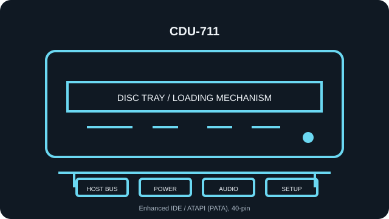

[ INDIVIDUAL COMPONENT // OPTICAL DRIVES ]
Sony CDU-711
Read-only internal CD-ROM reader. Specifications below identify the exact model; nearby family variants may use a different interface, mechanism, firmware, or jumper layout.

IDENTIFICATION: Sony CDU-711 · verify the full label, suffix and revision against the cited manual before assigning interface, disc-format, firmware or installation characteristics.
Verified specifications
| Catalog subcategory | CD-ROM readers |
|---|---|
| Exact product identifier | Sony CDU-711 |
| Read speed | 32× maximum CD-ROM read; maximum rating is not a guarantee for a particular disc or transfer path. |
| Supported CD formats | CD-ROM Mode 1/2, CD-ROM XA, CD-DA, Photo CD, Video CD, CD-I / CD-I Ready, CD-Plus, CD-E and CD-R media as listed for the model; read-only, not a recorder. |
| Host interface | Enhanced IDE / ATAPI (PATA), 40-pin |
| Host and mechanical compatibility | Internal half-height 5.25-inch tray-loading unit. Requires a legacy 40-pin PATA/ATAPI host and compatible BIOS/OS drivers; not a SATA or 12.7-mm slimline drive. |
| Firmware / jumper caveat | Set Master, Slave, or Cable Select only as marked on this unit and in its CDU-711 manual; do not infer pin order from a neighboring Sony model. Firmware updates, where available, must match CDU-711 and hardware revision. Verify the complete CDU-711 label/revision and firmware before using any update. Avoid firmware images for CDU-711-xx or other close Sony models unless the manufacturer explicitly specifies compatibility. |
Installation and preservation notes
- Before connection, compare the unit label, interface connector and jumper markings with the model-specific manual. Do not power an uncertain pinout.
- For this PATA/ATAPI unit, assign one master and one slave per IDE channel, or follow Cable Select requirements on a compatible cable.
- Keep the original firmware identity, host adapter/BIOS, driver version, disc type, read-error log and verified image checksum together during preservation work.
- Use this record for read compatibility only: a CD-ROM reader is not evidence of disc-writing support.
Manufacturer, archive and manual sources
- Sony — CDU-711 User Manual (manual archive)Scanned model manual with format, installation and jumper information.
- Sony CDU-711 — ManualsLib manual indexManual archive record for Sony CDU-711.
- Sony CDU-711 — Stason technical configuration archiveModel-specific archived interface/jumper details.
Sources are model manuals, manufacturer archives or technical archives. A related-family manual is identified as such; verify the exact drive label/revision before applying its jumper or firmware instructions.